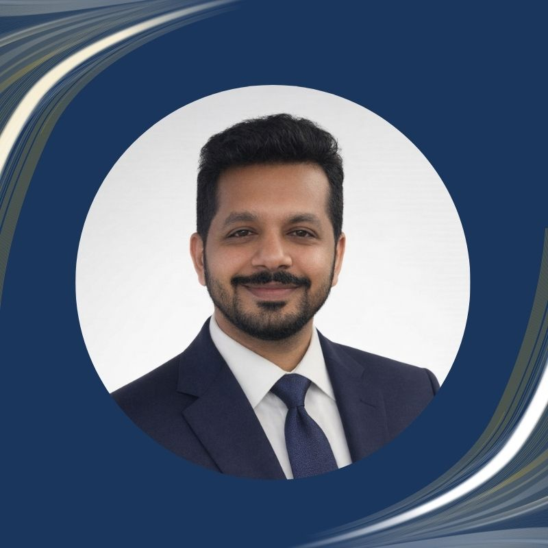

I help mega-project teams reduce NCRs, improve submission quality, and build audit-ready systems — without slowing delivery. Currently managing quality governance across SAR 5.55B and 31 buildings on the Diriyah Development Programme in Riyadh.
Led QA/QC across SAR 5B+ programmes • Managed teams up to 23 engineers • 60% NCR reduction track record

My path into quality management wasn't planned. I started as a site engineer on infrastructure projects in the GCC, working across roads, drainage, and metro construction in Qatar. During the COVID-19 pandemic, I was selected as QA/QC Engineer on the Hamad International Airport expansion — and that's when quality found me.
What began as a role became a philosophy. Quality isn't a department. It's a mindset — one that shapes how teams think about prevention, governance, and getting it right the first time.
Today I manage a team of 23 quality professionals on one of Saudi Arabia's most complex cultural mega-programmes, overseeing quality governance across 31 buildings in the Qurain Cultural District and infrastructure works along Wadi Hanifah. My approach centres on structured NCR management, trend analysis, material compliance, and building quality cultures that outlast any single project.
I hold a B.Tech in Civil Engineering and M.Tech in Remote Sensing & GIS from the National Institute of Technology Karnataka.
From metro tunnels to cultural landmarks, each project has deepened my understanding of what quality governance looks like at scale.
Heritage-inspired cultural mega-development including the Digital Art Museum and Qurain Mosque. Managing quality governance across building construction, Adobe heritage systems requiring specialist training, MEP installations, facade works, and fit-out. Responsibilities include MAR reviews, NCR trend analysis, procurement compliance, and weekly quality coordination with the main contractor (Nesma & Partners) and client PMC team.
Reduced recurring NCRs by 60% within 8 months through weekly trend analysis and structured root cause discussions with the contractor and client PMC. Conducted full reconciliation of contractor Asset Procurement File against Aconex data, identifying that only ~33% of active MARs were covered. Standardised MAR review workflow across architectural, structural, and MEP disciplines. Led specialist training compliance tracking for Adobe heritage construction crews.
Major infrastructure package forming the backbone of the Diriyah development — the spine corridor that now extends into the recently announced Grand Avenue. Scope included road infrastructure, drainage networks, and utilities serving the wider cultural district.
Established quality governance framework for infrastructure works from mobilisation. Managed quality assurance across road, drainage, and utility installations with zero critical non-conformances at handover stage. Infrastructure now forms the backbone of the 1.9 km Grand Avenue announced at MIPIM 2026.
Major airport expansion programme. Responsible for quality assurance on PCC/RCC concreting works across 39 aircraft stands and associated taxiway infrastructure. This project marked the transition into dedicated quality management — the role that shaped the career trajectory that followed.
Improved quality rejection rate by 70% through systematic review of submission packages before formal submittal. Achieved 93% submission volume optimisation by streamlining review and approval workflows between contractor and consultant teams. Managed quality assurance across PCC/RCC concreting for 39 aircraft stands under live airport operational constraints.
One of the Gulf's largest metro construction programmes. Eight years of experience spanning civil works, roads, drainage, and metro infrastructure delivery across multiple packages. This foundational period built deep expertise in large-scale infrastructure quality requirements and multi-stakeholder coordination.
Built foundational expertise in infrastructure quality across roads, drainage, and metro civil works over 8 years. Developed deep understanding of multi-stakeholder coordination between main contractor, subcontractors, and client representatives on a programme with immovable international event deadlines.
Each credential reflects a commitment to structured quality practice, continuous professional development, and recognised industry standards.
Quality governance is only as good as the results it produces. These metrics reflect the systems, not just the inspections.
Available for QA/QC Manager roles with Tier 1 PMCs and consultants across the GCC. Open to quality leadership positions on mega-programmes in Saudi Arabia, Qatar, and the UAE.